Sunpetal Valley · Step 1 visual review
The corrected Grab3D catalog downloaded all 16 models. Twelve catalog models fit this visual pass, and eleven optimized GLBs are new to the project. The coral reuses an existing derivative of the same verified download. This review covers the local build.
Sunpetal Homebase

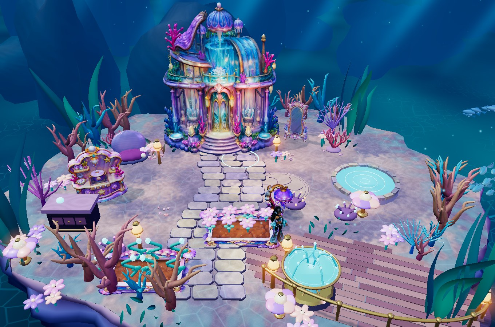

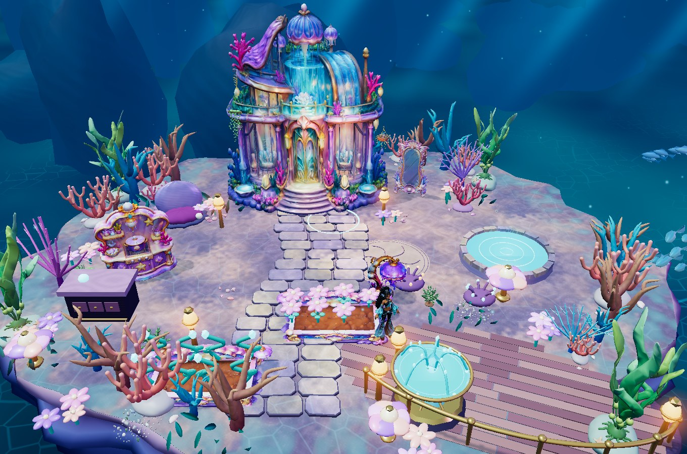

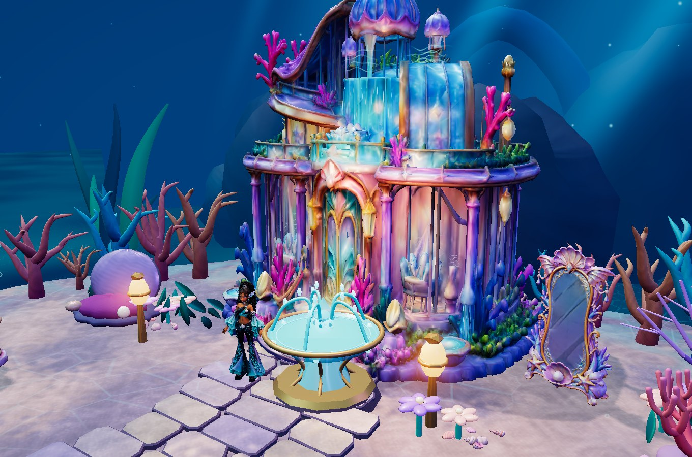

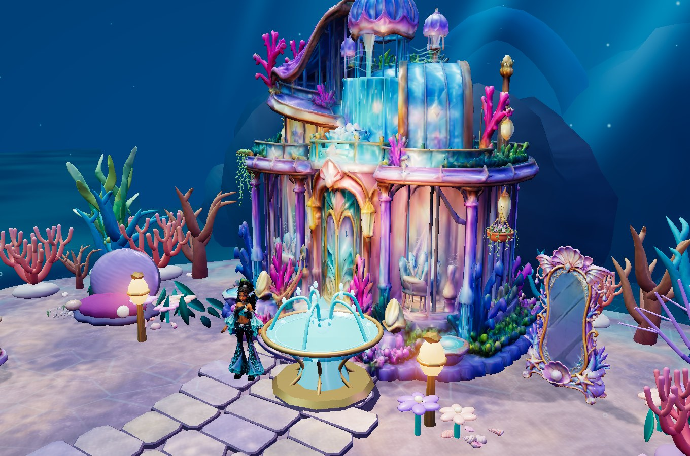
Coral and seaweed replace selected perimeter meshes. Pebbles and berry foliage add ground detail around the garden, and a basket and vine hang alongside the cottage. The center, beds, mirror, and fountain pads keep their layout and interactions.
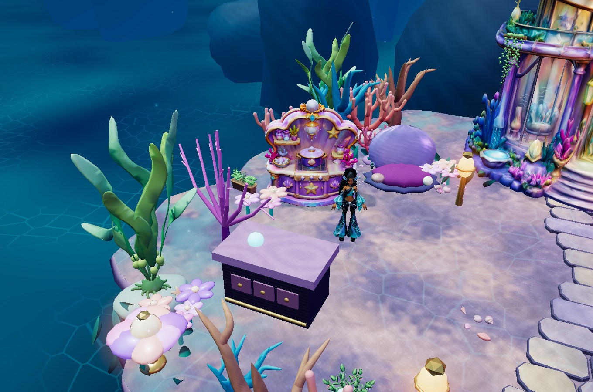
Moonlace Reef

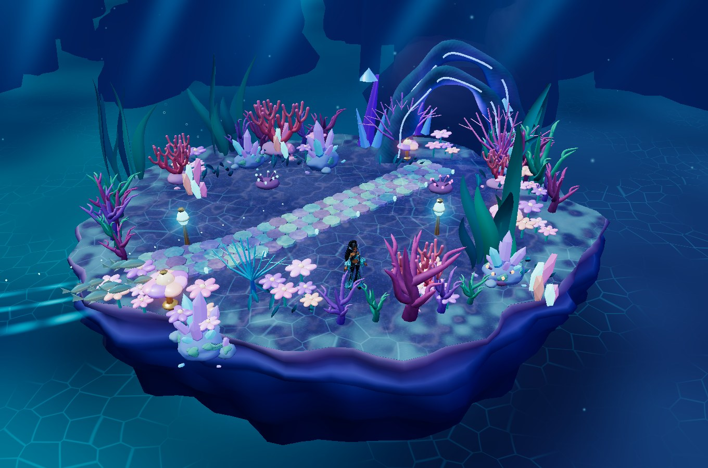

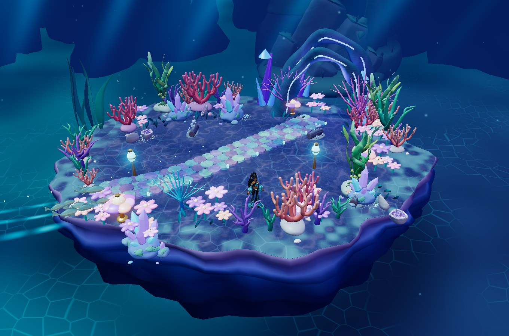

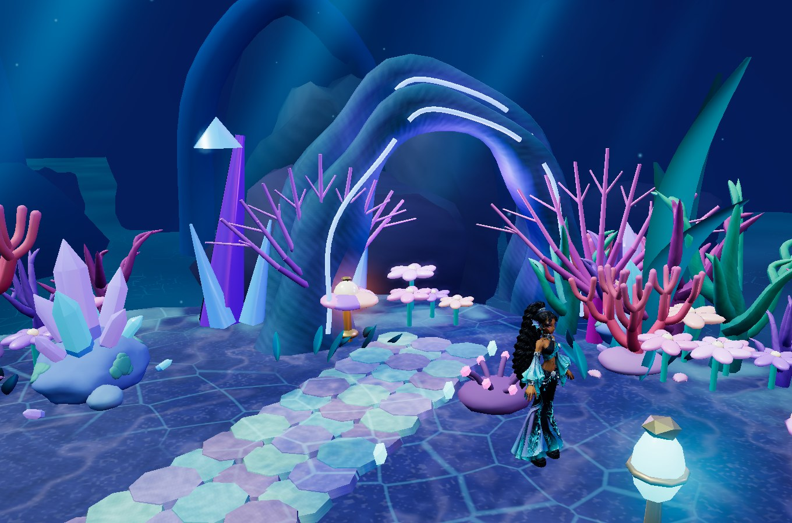

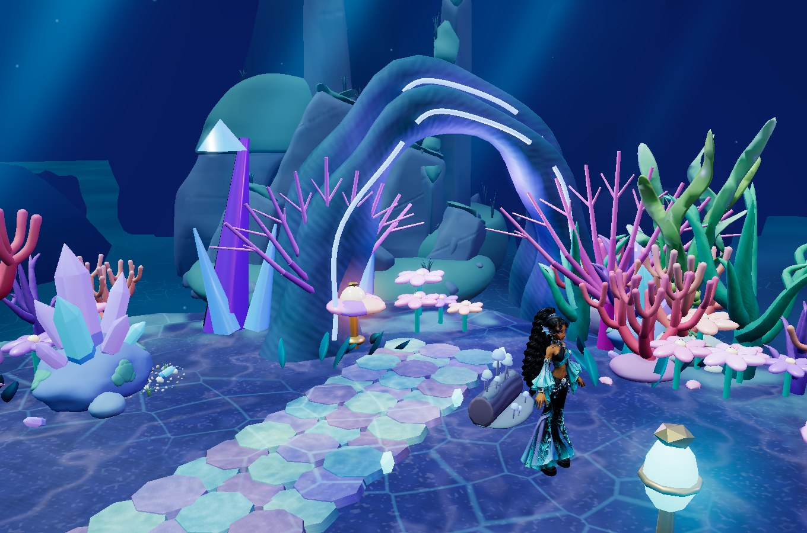
Geodes and mushroom clusters replace round accents off the path. Coral, seaweed, and pebbles keep to the perimeter. Textured rocks, an arch, and a cool-toned cave replace distant background forms. The Glassfin landmark, travel corridor, and quest positions remain accessible.
Models in the scene
| Catalog model | Runtime GLB under dist/environment | Bytes | Triangles per model |
|---|---|---|---|
| Coral Branch | coral.glb · Existing derivative | 293,232 | 6,956 |
| Seaweed | grab3d/kelp.glb | 120,020 | 7,032 |
| Glowing Mushroom Log | grab3d/glowlog.glb | 118,152 | 6,279 |
| Geode | grab3d/geode.glb | 235,824 | 9,556 |
| Pebble Scatter | grab3d/pebbles.glb | 129,400 | 7,028 |
| Berry Bush | grab3d/berry.glb | 193,240 | 7,517 |
| Hanging Vine | grab3d/vine.glb | 154,472 | 6,930 |
| Hanging Flower Basket | grab3d/flowerbasket.glb | 181,412 | 7,633 |
| Herb Planter | grab3d/herbs.glb | 168,480 | 6,297 |
| Cave Entrance | grab3d/cave.glb | 111,900 | 9,075 |
| Natural Rock Arch | grab3d/rockarch.glb | 109,384 | 9,083 |
| Rocky Outcrop | grab3d/rocks.glb | 132,424 | 9,102 |
The eleven new files total 1,654,708 bytes. They derive from the original catalog GLBs, with 512-pixel WebP maps and reduced Meshopt-compressed meshes. Both regions share cached files and instance repeated props. The originals and tint previews remain in the working backup. Download receipts, CC0 credits, hashes, and placement counts · Per-model checklist evidence
The corrected catalog resolved Natural Rock Arch, Hanging Flower Basket, Herb Planter, and Rose Bush. All 16 downloads succeeded. Moss Patch, Sand Dune, Strawberry Plant, and Rose Bush remain in the source backup for future use.
Materials and concept fidelity
Homebase sand has a matte, varied response with pearlescent trim at the tidepool. Reef slate has stronger relief and cooler mineral tones. A stronger top-down aqua key and a soft lavender fill give the two regions more depth. Coppery light stays near the cottage and violet light marks Glassfin. Kelp tips sway gently alongside the existing bubbles, plankton, and fish. Cave rocks use a deeper blue-green grade, with restrained emission on the geodes and mushroom caps. High and Low graphics views both retain the new props.
| Category | Homebase | Moonlace |
|---|---|---|
| Materials and textures | 21 / 25 | 20 / 25 |
| Lighting | 17 / 20 | 17 / 20 |
| Atmosphere | 12 / 15 | 13 / 15 |
| Scene dressing | 17 / 20 | 17 / 20 |
| Readability and playability | 17 / 20 | 16 / 20 |
| Observed visual score | 84 / 100 | 83 / 100 |
Both regions clear the 65-point review gate. Homebase still has some simpler nearby props whose finish differs from the cottage. Moonlace’s distant cave is coarser than the Glassfin foreground arch in close shots. Scores are visual assessments. Physical iPhone Safari performance and hardware FPS remain unverified.
Playable checks
- Desktop Chromium WebGL2 covered keyboard movement, the Luma intro, travel both ways, and collecting the Moonlace seed.
- 390 × 844 touch emulation covered tap-to-swim, travel, and moving the fountain between both original pads.
- Homebase loaded first. Reef-only props loaded on approach. The shared kelp and pebble GLBs each had one network request.
- A test-injected geode download failure retained the earlier reef accents while other assets and travel worked.
- Seven story regressions and eight scene regressions passed, including all 13 story steps, camera tracking, and both fountain transforms.

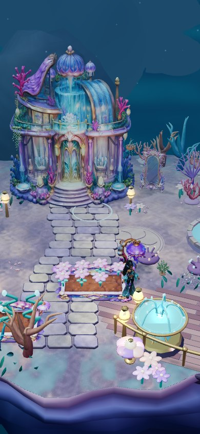

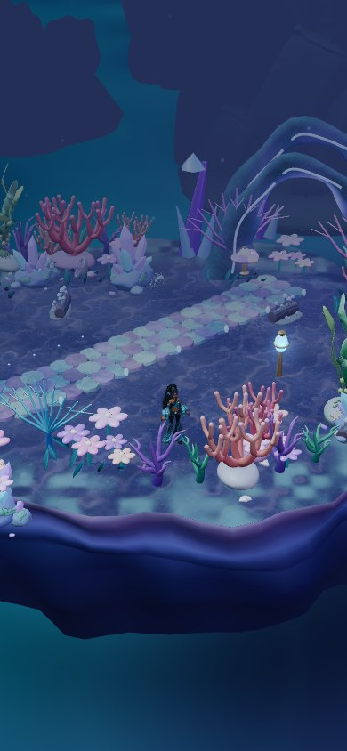
Browser checks · Story regressions · Scene regressions · Matched camera and instance data · Changed files